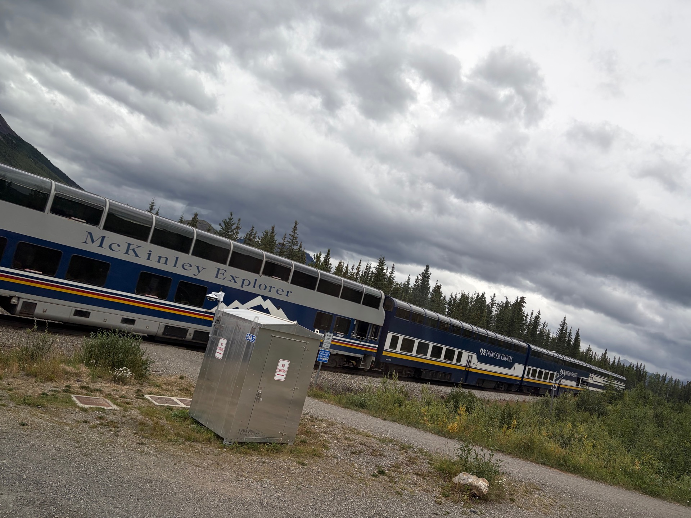
From Anchorage the Charmings boarded the McKinley Explorer, a glass-domed train built for exactly one purpose: carrying passengers through some of the most spectacular scenery on earth toward the great mountain that Alaskans simply call Denali — the High One. The train ride was long, as the story notes, but no one was complaining.
The dome cars offered unobstructed views in every direction, and the landscape obliged by being extraordinary for the entire journey.
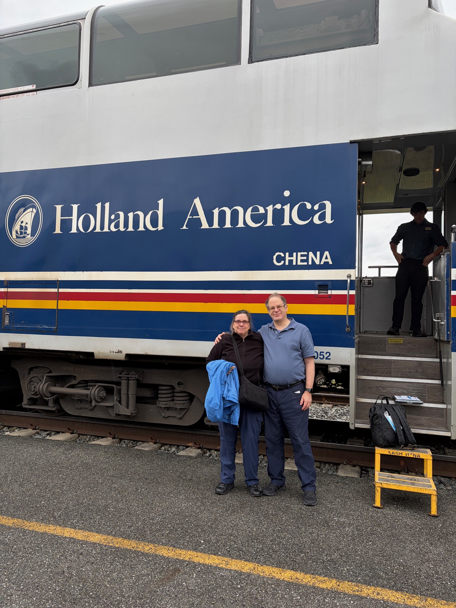
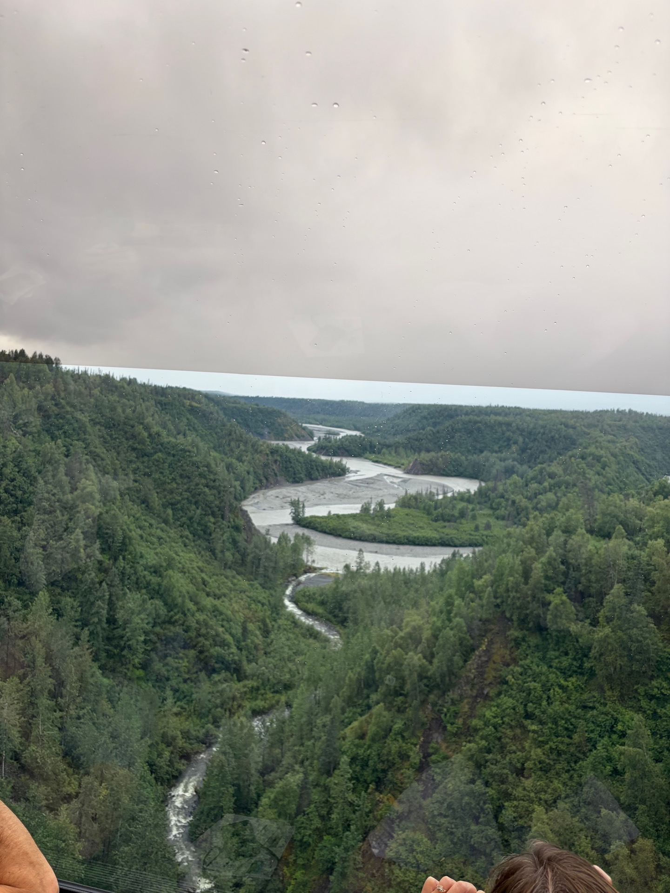
The Blue House
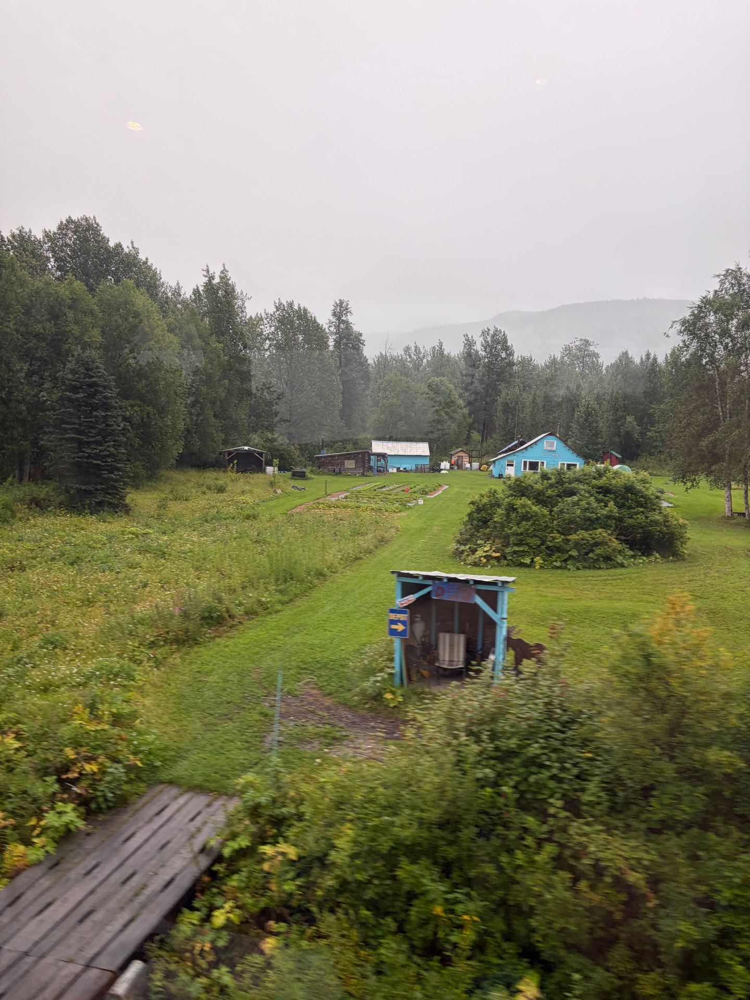
About halfway to the park, the tour guide pointed out a small blue house sitting alone in the wilderness. It had a story. In the 1960s, a homesteader arrived in this remote stretch of Alaska with his wife and a dream. He promptly left her there — alone, in the wilderness, with little more than a shotgun and a prayer — while he went to earn the money they would need to make a go of it.
She stayed. She survived. They built a life there, raised a family in the shadow of the greatest mountain on the continent, and eventually passed the house to one of their children, who lives there still. The tour guide also had a story about why the house was painted that particular shade of blue — but that part of the tale has been lost to the miles, as some stories are.
The Mountain
And then there it was. Denali. At 20,310 feet the highest peak in North America, rising so far above its surroundings that it creates its own weather. Most visitors never see the summit — it hides in cloud for the majority of the year. The Charmings were among the fortunate.
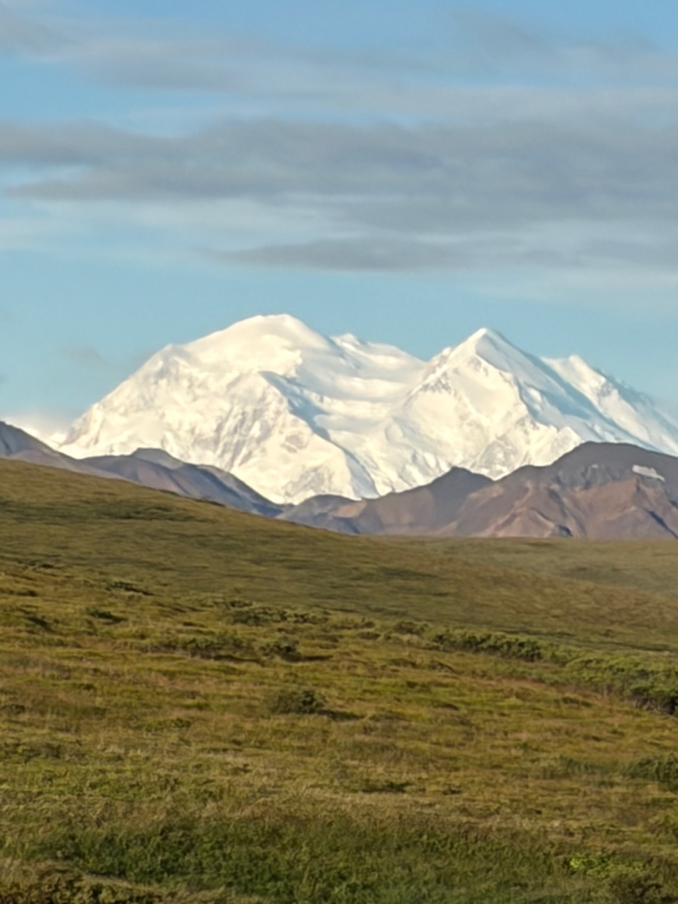
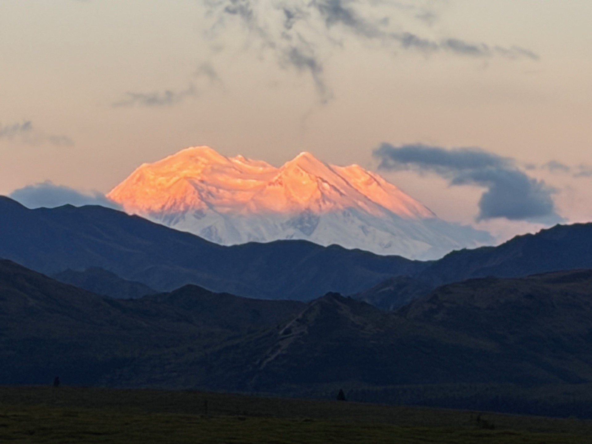
The Wildlife of Denali
The park delivered on every promise. The Charmings spent the day scanning the landscape and were rewarded handsomely — moose, sheep, bears, caribou, and a ptarmigan who seemed entirely unbothered by the attention. In Ketchikan the bears had hidden; here they had no such reluctance.
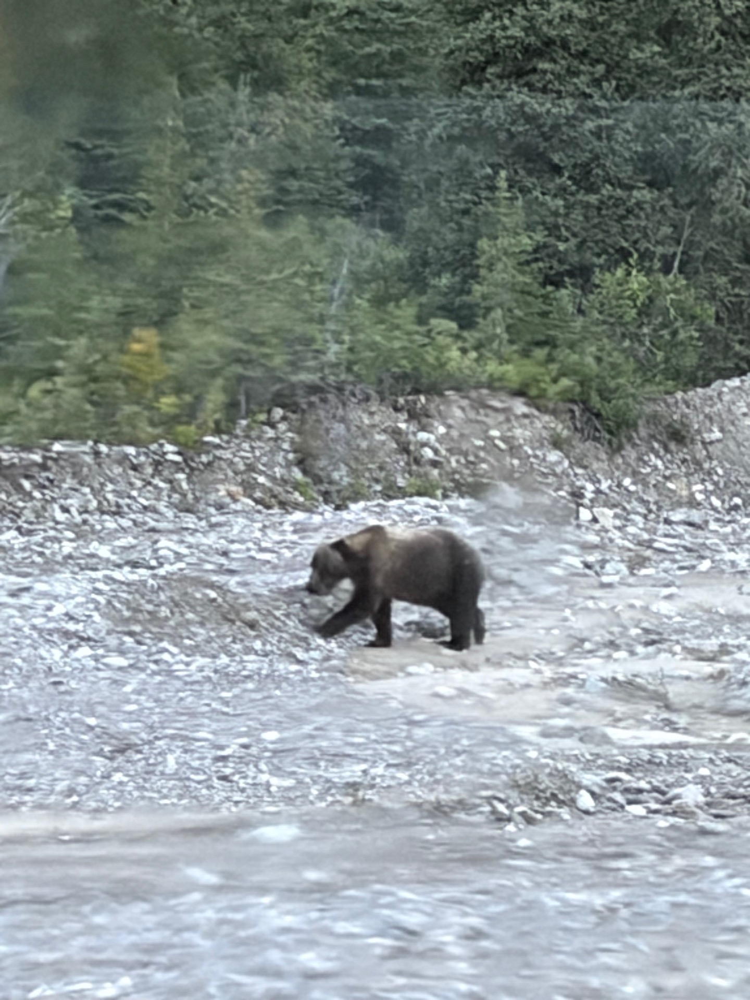
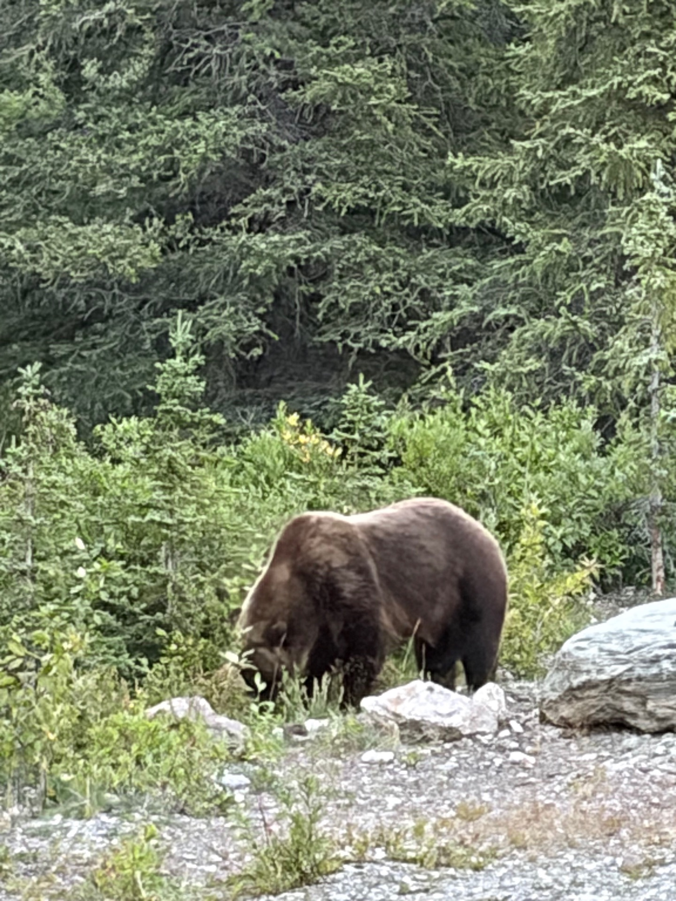
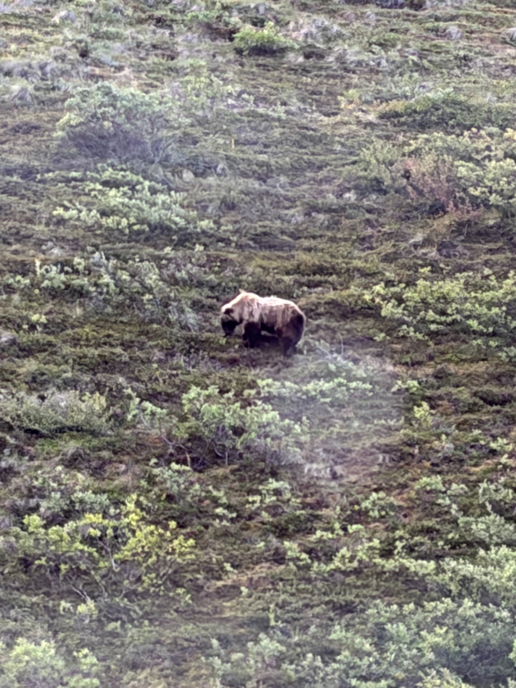
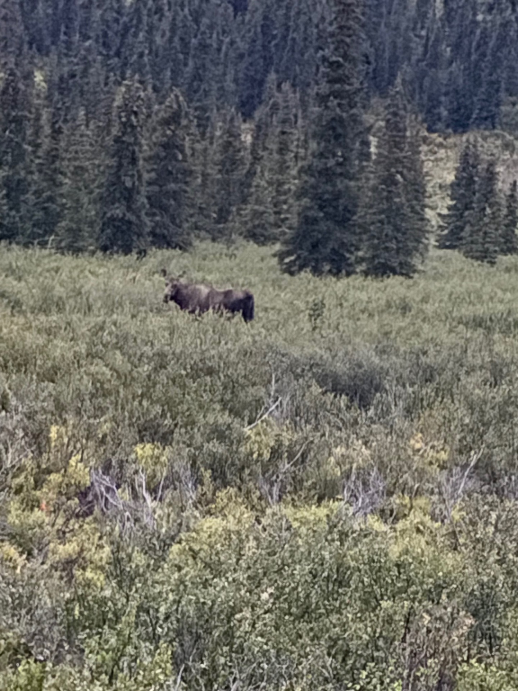
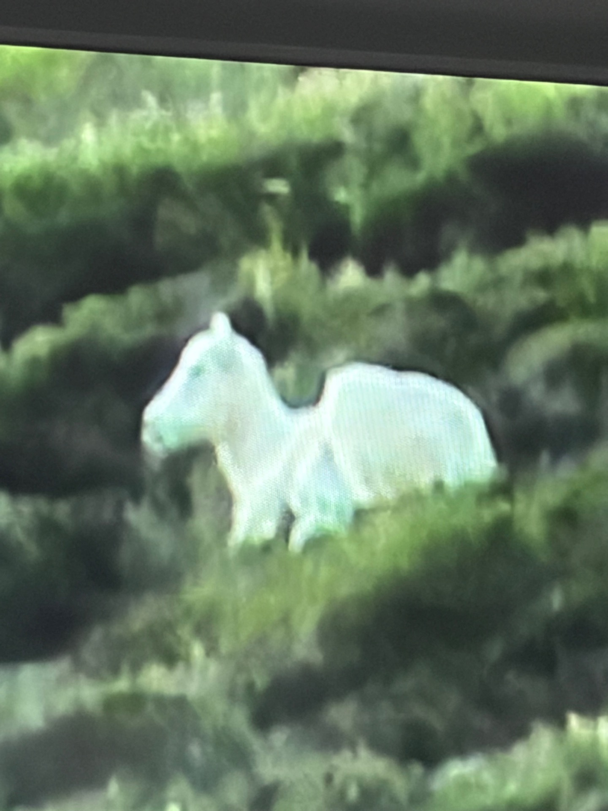
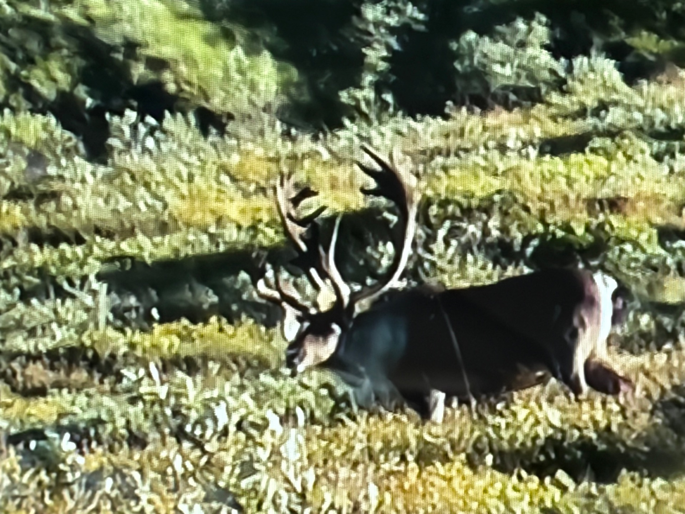
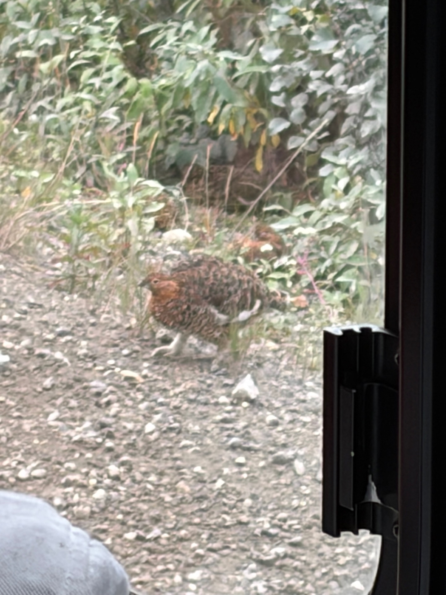
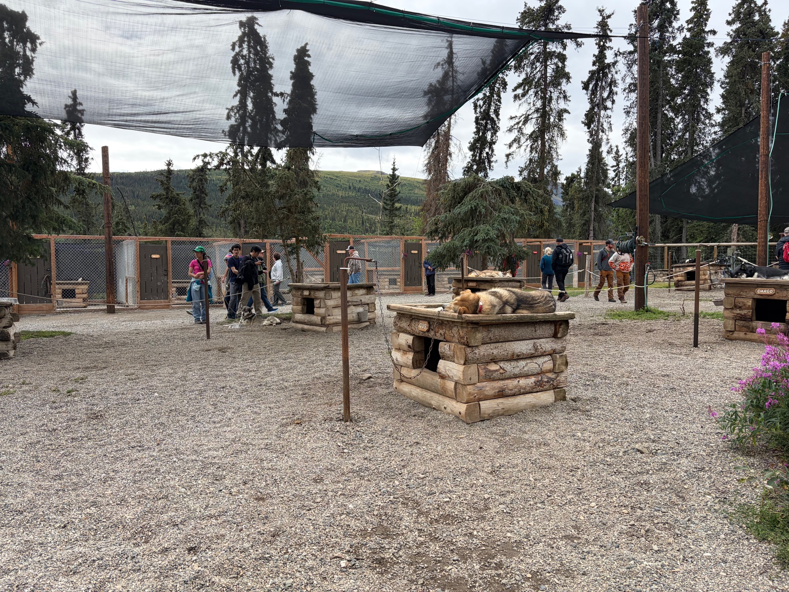
The sled dogs of Denali Park deserve their own mention. The park keeps a team of roughly thirty dogs — not the lean, wiry sprinters of the Iditarod, but stockier, more powerful animals bred for hauling supplies and conducting rescues through the deep Alaskan winter. When the roads close and the snow piles up and no vehicle can reach the backcountry, these dogs go. They train year-round, and in winter they become the park's lifeline — carrying gear, reaching stranded climbers, doing the work that machines cannot. They were magnificent, and they knew it.
The day ended at the gold nugget, where wonderful music played and the Charmings sat contentedly, tired in the best possible way. It had been a very long and very full day in the shadow of the highest mountain in North America, and there was nothing left to do but enjoy it.